VSCode Github
- VS Code 내의 Github 계정
Github의 계정이 복잡해져서 별도로 정리
VSCode Github Accounts
VSCode Extesion Github/Github Series 인증
- Git 기본 설정과 상관 이 없으며, 주로 VSCode의 Extension Github Series 확장기능 인증 사용
- VSCode의 Source Control 과 전혀 무관함
- VS Code Extension Github Account
| VS Code Extesion | 역할 | 계정 | OAuth 필요 | 독립가능 | 비고 |
|---|---|---|---|---|---|
| GitHub | 기본 GitHub 인증 (Authentication) | ✅ 예 | ✅ 예 | ⚠️ | GitHub 확장과 인증을 공유 많음 |
| GitHub Repository | Remote Repository 탐색/수정/열기 | ✅ 예 | ✅ 예 | ❌ | 주로 거의 사용 안함 |
| GitHub Pull Requests | Github PR, Issue 관리 | ✅ 예 | ✅ 예 | ❌ | GitHub 인증을 사용하는 것이 일반적 |
| GitHub Actions | Actions 실행/로그 조회 | ✅ 예 | ✅ 예 | ❌ | GitHub 인증을 사용하는 것이 일반적 |
| GitHub Copilot | Copilot AI 코드 생성 | ⚠️ 별도 외부계정? | ✅ 예 | ⚠️ | GitHub 인증을 사용하는 것이 일반적 |
OAuth 가 기본(default) Browser로 Login 인증
- Github 2개 계정을 각 지원이 안될 경우, 브라우저 기본설정을 변경해서 진행
- 2개의 Browser로 각 별도 인증 진행
- VS Code가 브라우저를 통해 인증을 진행
- 1개의 계정의 경우, 필요 없음
- 상위 이외 더 확장적 Github Extensions 존재 (Azure)
-
VSCode 의 Account
VS Code 의 Github 연결사항 확인
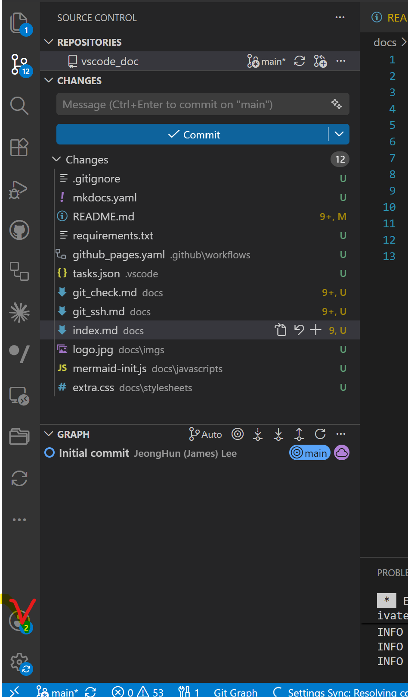
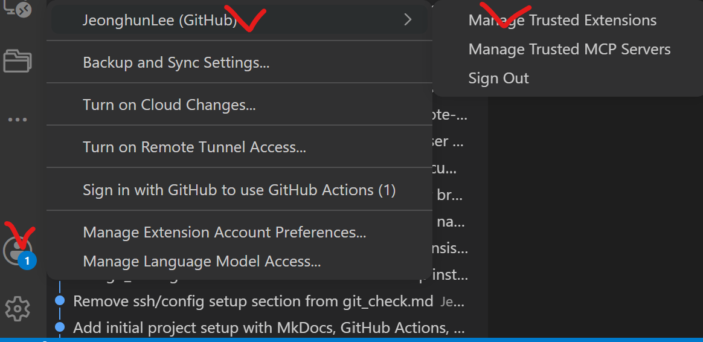
-
Github Reposites 아래부분 확인
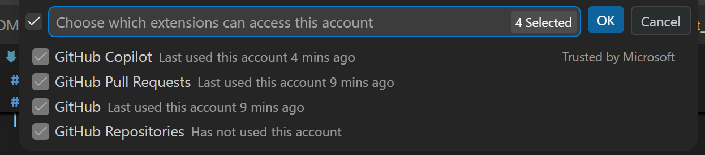
Github Repositories
- Has not used this account
- Source Control에서 문제 없으며, 기능은 거의 잘 안쓰여짐
Default Browser
기본 Browser로 변경
- Github 가 Window 의 기본 Browser로 인증하기 때문에 중요
- Github 의 OAuth 인증
-
Browser 기본앱 변경
- 설정(Settings) 열기
- 앱(Apps) → 기본 앱(Default apps)
- 검색창에 브라우저 이름 입력
- Edge
- Chrome
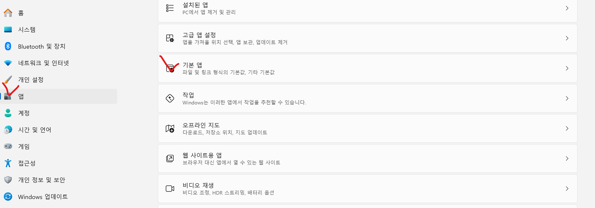
-
단축 키 Default Chrome 변경
- 단축 키
Win + R : 실행ms-settings:defaultapps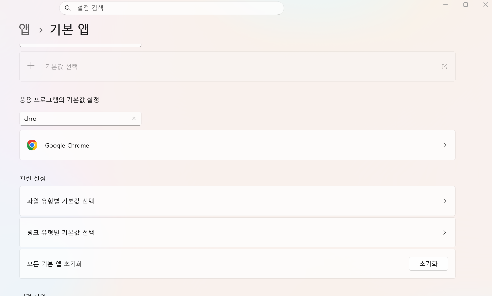
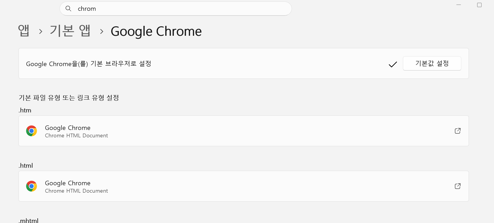
- 단축 키
Github Management
Github Copiolot
- VSCode Github 이지 Git 설정이 아님 (Git 설정은 별도임)
- 다른 계정허용 가능
- VS Code 내의 Github
| 항목 | 역할 | 1개 계정 |
|---|---|---|
| GitHub | 기본 GitHub 인증 (Authentication) | ✅ 예 |
| GitHub Repository | 저장소 탐색 | ✅ 예 |
| GitHub Pull Requests | PR, Issue 관리 | ✅ 예 |
| GitHub Actions | Actions 실행 및 로그 조회 | ✅ 예 |
| GitHub Copilot | Copilot 인증 | ❌ 별도 외부 계정 설정 가능 |
Github Mutiple Accounts
- Github Account-> Multiple Account
- Manage Extension Account Preference 개별 로그인
- new account 추가 가능
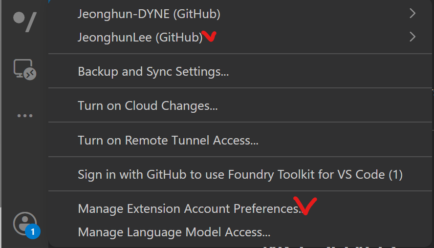
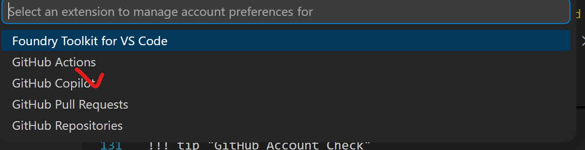
Check Github Accounts
GitHub Account Check
- 아래와 같이 Sign Out 통해 쉽게 각 인증되어진 Github Extension 확인 가능
- Check Github Account-> Sing Out
- Manage Extension Account Preference 확인 가능
- Github Account-> Sing Out 확인 가능
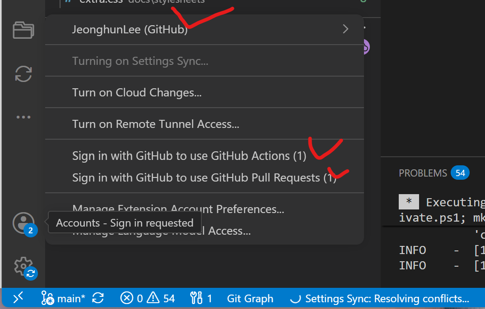
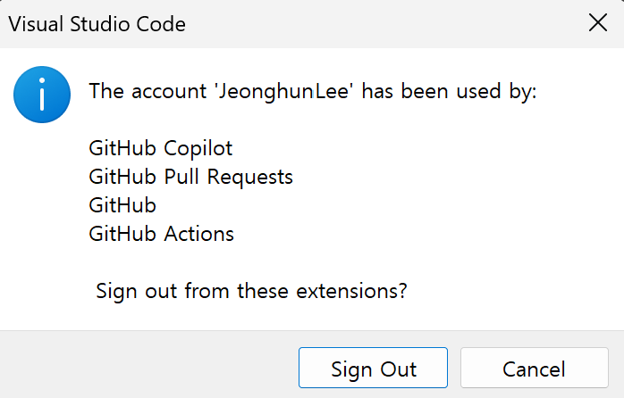
- Github Account-> Multiple Account 확인
- 각 Github로 Manage Truested Extension 확인 가능
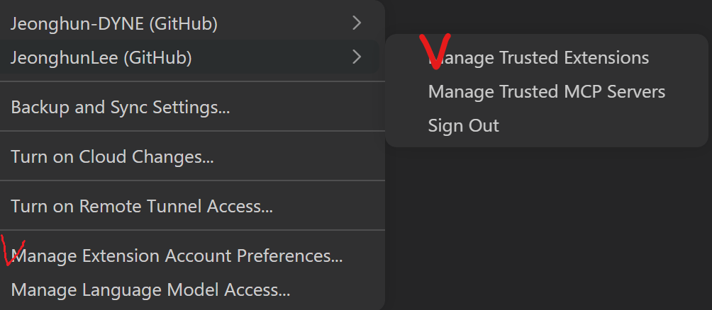
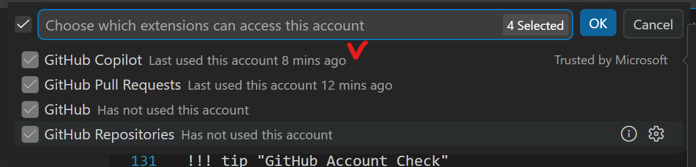
- 각 Github로 Manage Truested Extension 확인 가능
Github Copliot
GitHub Copliot Check
- Github Copliot 을 구독 해야 Codex/Claude CLI 이용가능
- 이를 VS Code에 연결해서 사용가능
- Github 의 Copliot 구독확인
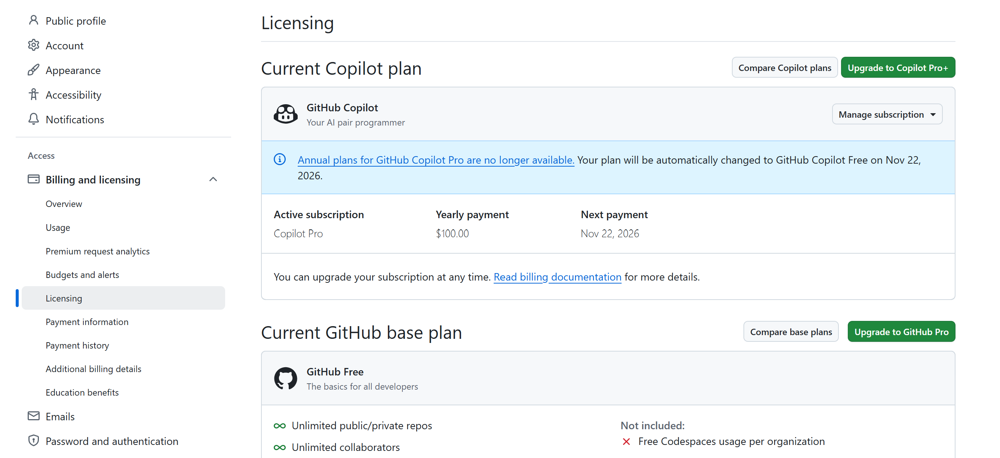
- Github 의 Copliot 설정확인
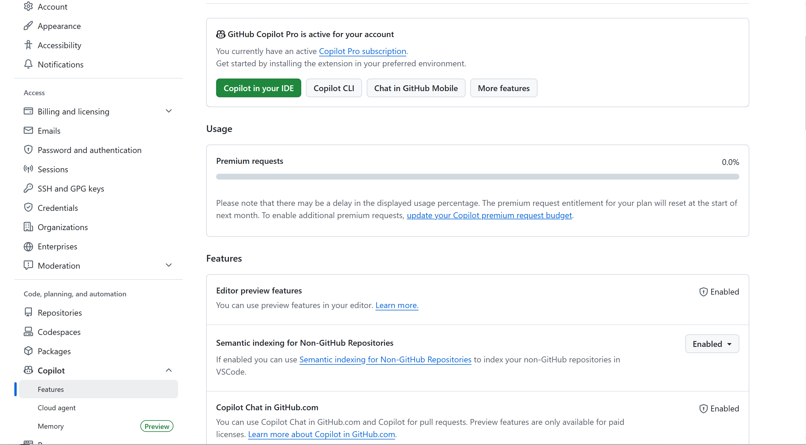
Copliot Codex/Claude
Github 의 Copliot이 구독 중이여 가능
- 아래와 같이 Codex CLI 연결 이용
- 아래와 같이 Claude CLI 연결 이용
- Codex/Claude
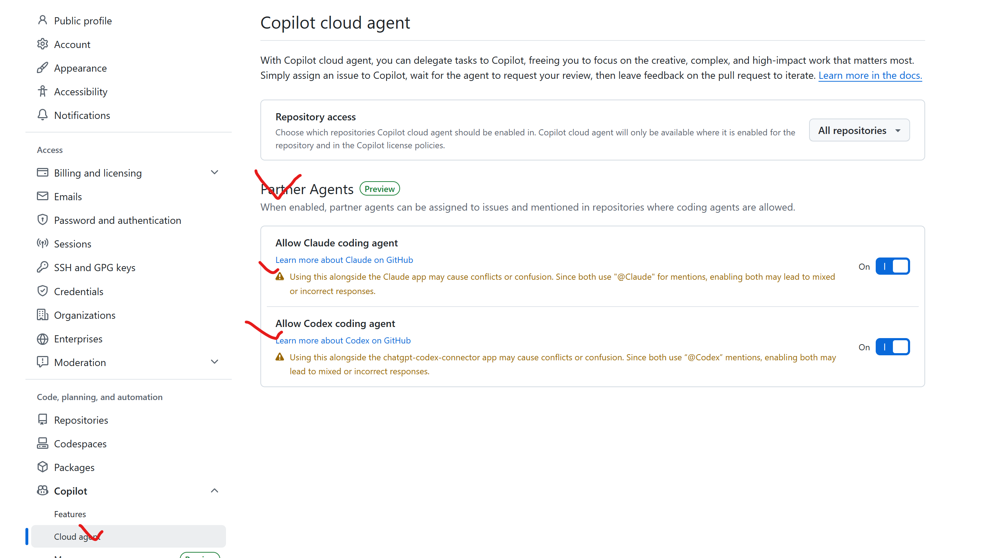
VSCode AI
Github 의 Copliot/Codex/Claude 3개 AI 이용가능
- Github Copliot이 구독 중이여 가능"
- Codex CLI 연결 이용
- Claude CLI 연결 이용
Codex/Claude
- Github의 Copliot 기반이므로 Copliot이 안되면, 각 Codex/Claude CLI 연결이 안됨
- Codex/Claude는 구독 중이라면 VS Extesion 으로 Token 방식 도 고려
- 돈이 많이 들어감
- Ollama 내부 LLM 사용가능하나, Continue 통해 가능
- Github Colliot
- Codex/Claude CLI
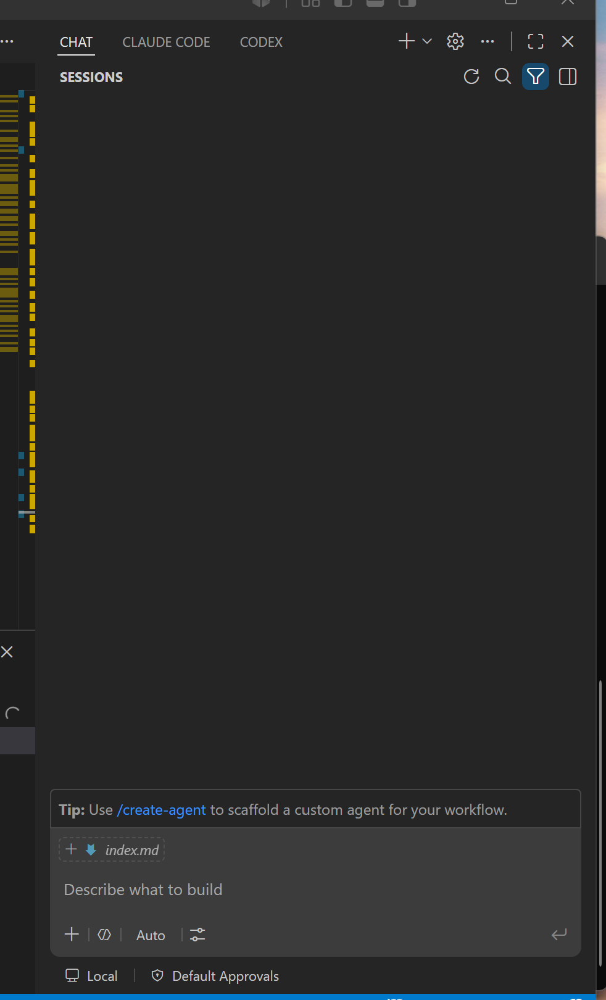
- Codex/Claude CLI
VSCode Souce Control
VSCode Github 와 Source Control
- Git의 기본기능 과 VS Code Extesion Github 인증는 별개로 동작
- VS Code Extension - Github 인증
Git 설정 및 확인
VS Code - Git Graph
- VSCode Source Control Manaul
https://code.visualstudio.com/docs/sourcecontrol/quickstart
- TEST SSH-GIT
ssh -T git@github.com Hi JeonghunLee! You've successfully authenticated, but GitHub does not provide shell access.
GUI Souce Control
Git Graph / history
- Git Graph
- 같이 사용하기 Git History 역시
- VS Code - Source Control
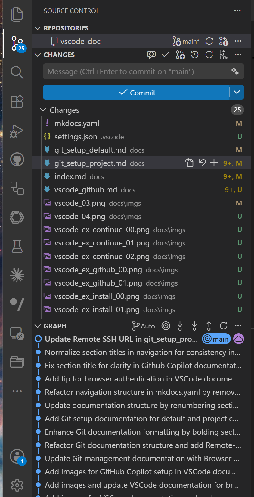
이전에는 Remote 기능이 있었으나, 현재 삭제되고, 아래와 같이 확인만 가능
- Remote 정보
- orgin/main : remote
- main : local
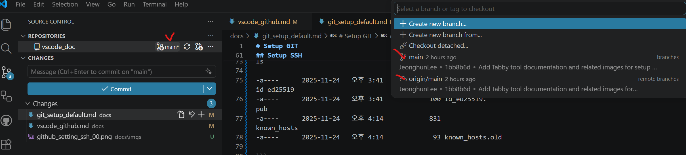